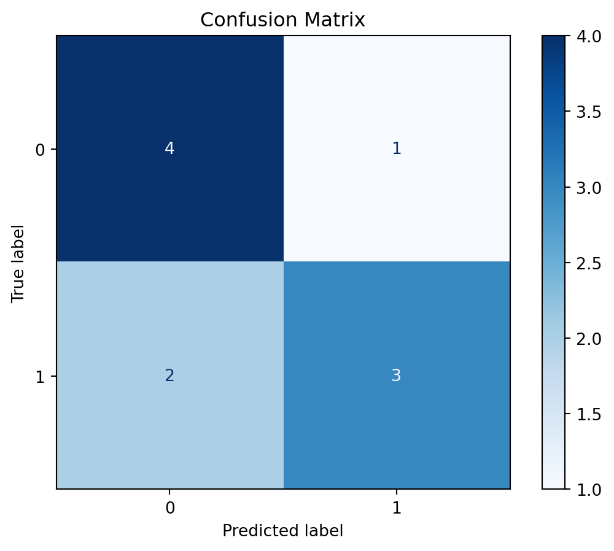
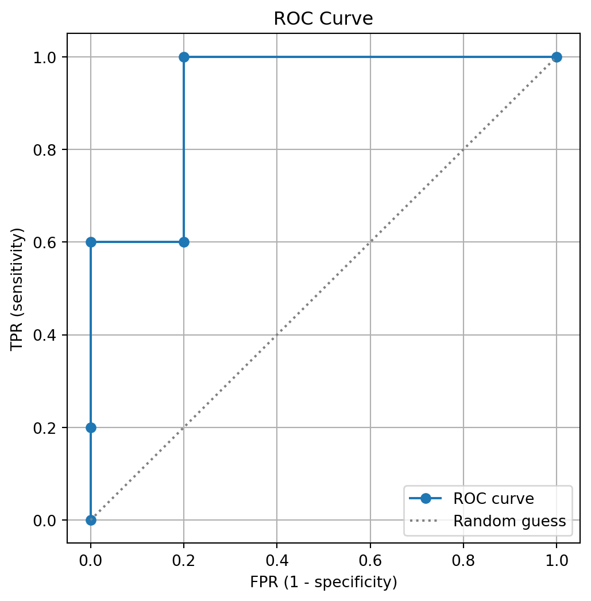

import numpy as np
import pandas as pd # for later
# positive(+) = 1; negative(-) = 0
y = np.array([1,1,0,1,0, 0,1,0,0,1], dtype=int) # true labels
yhat = np.array([1,0,0,0,1, 0,1,0,0,1], dtype=int) # predicted labels
classes = [0, 1]14 Performance Measures
Performance of predictive models in data mining—such as classification and regression—can be measured in various ways.
This session explains the evaluation of classification and regression models using different performance metrics:
- Binary classification: confusion matrices for basic metrics, ROC curve and AUC, and the effect of varying thresholds.
- Multi-class classification: confusion matrices to calculate accuracy, macro-recall, and weighted recall.
- Regression: error-based metrics to evaluate numerical predictions.
14.1 Binary Classification Performance
Let’s consider a target vector y of true labels (1 for positive and 0 for negative cases) for 10 records, and a vector of predictions yhat:
14.1.1 Confusion matrix
The confusion matrix shows classification results on a dataset
\[ \text{Confusion Matrix} = \begin{bmatrix} TN & FP \\ FN & TP \end{bmatrix} \]
The four base elements are:
- TN (True Negative): predicted
0when actual was0 - FP (False Positive): predicted
1when actual was0 - FN (False Negative): predicted
0when actual was1 - TP (True Positive): predicted
1when actual was1
You can compute the four entries of the confusion matrix directly:
# True Negatives: predicted 0 and actual 0
TN = np.sum((yhat == 0) & (y == 0))
# False Positives: predicted 1 but actual 0
FP = np.sum((yhat == 1) & (y == 0))
# False Negatives: predicted 0 but actual 1
FN = np.sum((yhat == 0) & (y == 1))
# True Positives: predicted 1 and actual 1
TP = np.sum((yhat == 1) & (y == 1))
cm = np.array(
[[TN, FP],
[FN, TP]]
)
print(cm)[[4 1]
[2 3]]crosstab() performs a similar operation as it counts the same paired values:
xtab = pd.crosstab(pd.Series(y, name="True"), pd.Series(yhat, name="Pred"))
xtab = xtab.reindex(index=classes, columns=classes, fill_value=0)
print(xtab)Pred 0 1
True
0 4 1
1 2 3You can generate a confusion matrix using confusion_matrix():
from sklearn.metrics import confusion_matrix
# Generate confusion matrix with labels fixed as [0,1]
cm = confusion_matrix(y_true=y, y_pred=yhat, labels=classes)
print(cm)[[4 1]
[2 3]]We can unpack the resulted confusion matrix into four values:
# sklearn returns:
# [[TN, FP],
# [FN, TP]]
TN = cm[0,0]
FP = cm[0,1]
FN = cm[1,0]
TP = cm[1,1]
# TN, FP, FN, TP = cm.ravel()
print(np.array([[TN, FP], [FN, TP]]))[[4 1]
[2 3]]The confusion matrix cm can also be visualized as a heatmap, which makes it easier to interpret classification performance. In scikit-learn, this can be done with the ConfusionMatrixDisplay class, along with optional styling:
import matplotlib.pyplot as plt
from sklearn.metrics import ConfusionMatrixDisplay
# Create a ConfusionMatrixDisplay object
disp = ConfusionMatrixDisplay(confusion_matrix=cm, display_labels=classes)
# Plot with a blue color map
disp.plot(cmap="Blues")
# Add a title
plt.title("Confusion Matrix")
# Show the figure
plt.show()
14.1.2 Basic measures based on confusion matrix
Using these four values in the confusion matrix, we calculate several metrics:
TPR = TP / (TP + FN) # true positive rate
FNR = FN / (TP + FN) # false negative rate
FPR = FP / (FP + TN) # false positive rate
TNR = TN / (FP + TN) # true negative rate
PPV = TP / (TP + FP) # precision
ACC = (TP + TN) / (TP + TN + FP + FN) # accuracy
F1 = 2 * (PPV * TPR) / (PPV + TPR) # f1 score
# or, F1 = 2 / ( 1/TPR + 1/PPV )
print("TPR: ", TPR)
print("FNR: ", FNR)
print("FPR: ", FPR)
print("TNR: ", TNR)
print("Precision: ", PPV)
print("Accuracy: ", ACC)
print("F1: ", F1.round(2))TPR: 0.6
FNR: 0.4
FPR: 0.2
TNR: 0.8
Precision: 0.75
Accuracy: 0.7
F1: 0.67- TPR (Recall): fraction of positives correctly predicted.
- FNR: fraction of positives incorrectly predicted as negatives.
- FPR: fraction of negatives incorrectly predicted as positives.
- TNR (Specificity): fraction of negatives correctly predicted.
- PPV (Precision): fraction of predicted positives that are actually positive.
- Accuracy: overall fraction of correct predictions.
- F1 Score: harmonic mean of precision and recall (balances both).
Due to a potential issue from zeros in denominator, it’s common to consider practical adjustment:
# small epsilon to avoid division by zero
eps = 1e-12 # small enough to be ignored in the main estimation
TP_zero = 0
FN_zero = 0
TPR_zero = TP_zero / (TP_zero + FN_zero + eps)
print("TPR:", TPR_zero)TPR: 0.0Instead of computing each measure manually from TP, FP, TN, and FN, scikit-learn provides built-in functions for the same values.
from sklearn.metrics import (
accuracy_score,
precision_score,
recall_score,
f1_score
)
TPR_skl = recall_score(y, yhat, pos_label=1, zero_division=0) # Recall = TPR
PPV_skl = precision_score(y, yhat, pos_label=1, zero_division=0) # Precision = PPV
ACC_skl = accuracy_score(y, yhat) # Accuracy
F1_skl = f1_score(y, yhat, pos_label=1, zero_division=0) # F1 Score
print("TPR: ", TPR_skl)
print("FNR: ", 1 - TPR_skl) # FNR is complement of Recall
print("Precision: ", PPV_skl)
print("Accuracy: ", ACC_skl)
print("F1: ", round(F1_skl, 2))TPR: 0.6
FNR: 0.4
Precision: 0.75
Accuracy: 0.7
F1: 0.6714.1.3 Thresholding Probabilistic Results
Given predicted probabilities, we can turn them into class labels using different cutoffs (thresholds) and then compare performance at each cutoff.
For example, probabilities in yprob are the probabilities that the prediction for labels in y are be positive (class 1):
# Predicted probabilities for the positive class (same record order as y)
yprob = np.array([0.73, 0.48, 0.22, 0.33, 0.52, 0.10, 0.98, 0.05, 0.12, 0.78])
res = pd.DataFrame(
{"Actual": y, "Prob": yprob},
)
print(res) Actual Prob
0 1 0.73
1 1 0.48
2 0 0.22
3 1 0.33
4 0 0.52
5 0 0.10
6 1 0.98
7 0 0.05
8 0 0.12
9 1 0.78Each cutoff naturally yields different predicted labels and so different confusion matrices and metric values accordingly. For example, create new predicted labels: 1 if Prob > cutoff else 0:
c = 0.1 # cutoff
yhat_cut010 = (res["Prob"] > c).astype('int') # Comparison followed by conversion into `int` type
yhat_cut010.name = "cut_" + f"{c:.2f}" # or "{:.2f}".format(c)
print(yhat_cut010, '\n')
print(
confusion_matrix(y_true=res["Actual"], y_pred=yhat_cut010, labels=classes)
)0 1
1 1
2 1
3 1
4 1
5 0
6 1
7 0
8 1
9 1
Name: cut_0.10, dtype: int64
[[2 3]
[0 5]]c = 0.50 # cutoff
yhat_cut050 = (res["Prob"] > c).astype('int') # Comparison followed by conversion into `int` type
yhat_cut050.name = "cut_" + f"{c:.2f}" # or "{:.2f}".format(c)
print(yhat_cut050, '\n')
print(
confusion_matrix(y_true=res["Actual"], y_pred=yhat_cut050, labels=classes)
)0 1
1 0
2 0
3 0
4 1
5 0
6 1
7 0
8 0
9 1
Name: cut_0.50, dtype: int64
[[4 1]
[2 3]]c = 0.9 # cutoff
yhat_cut090 = (res["Prob"] > c).astype('int')
yhat_cut090.name = "cut_" + f"{c:.2f}" # or "{:.2f}".format(c)
print(yhat_cut090, '\n')
print(
confusion_matrix(y_true=res["Actual"], y_pred=yhat_cut090, labels=classes)
)0 0
1 0
2 0
3 0
4 0
5 0
6 1
7 0
8 0
9 0
Name: cut_0.90, dtype: int64
[[5 0]
[4 1]]
f-strings and str.format() method
f-strings (formatted string literals) was introduced in Python 3.6 to build strings that include variable values:
- Start the string with
f"...".
- Put variables or expressions inside
{}.
cutvalue = 3.14
f_str1 = f"cut_{cutvalue}"
print("f-string example:", f_str1)
print(type(f_str1))f-string example: cut_3.14
<class 'str'>You can also control how numbers are displayed with the variable, followed by format specifiers and a colon inside {}:
f_str2 = f"cut_{cutvalue:.5f}"
print("f-string example in a selected format:", f_str2)f-string example in a selected format: cut_3.14000The format() method is older but still widely used to build strings with variable values:
- Use
{}placeholders in the string and call.format(...)to fill them. - Add format specifiers the same way, after a colon inside {}.
format_method1 = "cut_{:.3f}".format(cutvalue)
print("format method example:", format_method1)format method example: cut_3.140
Note
The table below summarizes commonly used format type codes for f-strings and str.format() in Python. For more and other types of codes, see the documentation.
| Specifier | Meaning |
|---|---|
b |
Binary format |
c |
Unicode character (from integer code point) |
d |
Decimal integer |
o |
Octal integer |
x |
Hexadecimal (lowercase) |
X |
Hexadecimal (uppercase) |
n |
Number format (like d but locale-aware for separators) |
e |
Scientific notation (lowercase e) |
E |
Scientific notation (uppercase E) |
f |
Fixed-point number format |
F |
Fixed-point (same as f but inf → INF, nan → NAN) |
g |
General format (uses fixed-point or scientific depending on magnitude) |
G |
General format (like g, but with uppercase E for exponent) |
% |
Percentage format (multiplies by 100 and adds %) |
# example
num = 1234.567
print(f"{num:f}") # float
print(f"{num:e}") # scientific notation
print(f"{num:%}") # percentage1234.567000
1.234567e+03
123456.700000%| Specifier | Meaning |
|---|---|
, |
Use a comma as a thousands separator |
_ |
Use an underscore as a thousands separator |
. |
Precision specifier: number of digits after the decimal point (floats) |
width |
Minimum field width (pads result with spaces by default) |
# example
num = 1234.567
print(f"{num:f}") # default decimals
print(f"{num:.4f}") # with 4 decimals
print(f"{num:,.4f}") # comma as thousand separator
print(f"{num:_.2f}") # underscore separator 1234.567000
1234.5670
1,234.5670
1_234.57| Specifier | Meaning |
|---|---|
< |
Left-align the result within the available space |
> |
Right-align the result within the available space |
^ |
Center-align the result within the available space |
= |
Place the sign to the leftmost position (before padding) |
+ |
Show a plus sign for positive numbers and a minus for negative numbers |
- |
Show a minus sign only for negative numbers |
| (space) | Insert a leading space for positive numbers (minus for negatives) |
# example
num = 1234.567
print(f"{num:<12.2f}") # left align
print(f"{num:>12.2f}") # right align
print(f"{num:^12.2f}") # center align
print(f"{num:+.2f}") # always show sign → '+1234.57'1234.57
1234.57
1234.57
+1234.57The results across all various cutoffs can be summarized in a table.
# Define the cutoffs we want to test
cuts = [0.15, 0.25, 0.50, 0.75, 0.85]
# For each cutoff, create a new predicted-label column: 1 if Prob > cutoff else 0
for c in cuts:
col = f"cut_{c:.2f}"
res[col] = (res["Prob"] > c).astype(int)
print(res) Actual Prob cut_0.15 cut_0.25 cut_0.50 cut_0.75 cut_0.85
0 1 0.73 1 1 1 0 0
1 1 0.48 1 1 0 0 0
2 0 0.22 1 0 0 0 0
3 1 0.33 1 1 0 0 0
4 0 0.52 1 1 1 0 0
5 0 0.10 0 0 0 0 0
6 1 0.98 1 1 1 1 1
7 0 0.05 0 0 0 0 0
8 0 0.12 0 0 0 0 0
9 1 0.78 1 1 1 1 0for loop
A for loop in Python is used to repeat a block of code for each element in a sequence. At each iteration, the loop assigns one element of the sequence to a loop variable, then executes the indented code block.
Generally, a for loop code contains five basic components:
for variable in sequence:
# code that uses 'variable'
print(variable) for— the keyword that declares the start of the loop.variable— a loop variable that takes on each element from the sequence in turn.in— the keyword that connects the loop variable with the sequence.sequence— an iterable object (such as a list, tuple, or range) that the loop will iterate over.
Here is another example that prints each item in the list cuts:
for c in cuts:
print("Current cutoff:", c)Current cutoff: 0.15
Current cutoff: 0.25
Current cutoff: 0.5
Current cutoff: 0.75
Current cutoff: 0.8514.1.4 ROC curve
The Receiver Operating Characteristic (ROC) curve is a graphical tool for evaluating binary classification models.
- It shows the trade-off between True Positive Rate (TPR, or Recall/Sensitivity) and False Positive Rate (FPR, or 1 - Specificity).
- Each point on the ROC curve corresponds to a different cutoff (threshold) applied to the predicted probabilities.
- The closer the curve follows the top-left corner, the better the classifier.
- The diagonal line represents random guessing (no discrimination ability).
Values (necessary) for ROC curve can be obtained by using roc_curve in scikit-learn:
from sklearn.metrics import roc_curve
# FPR, TPR, thresholds are calculated across all possible cutoffs
fpr, tpr, thresholds = roc_curve(y_true=y, y_score=yprob, pos_label=1)
# Organize the values into a DataFrame for inspection
roc_df = pd.DataFrame({
"threshold": thresholds, # cutoff values (in descending order)
"FPR": fpr, # false positive rate at each cutoff
"TPR": tpr # true positive rate (recall) at each cutoff
})
print(roc_df) threshold FPR TPR
0 inf 0.0 0.0
1 0.98 0.0 0.2
2 0.73 0.0 0.6
3 0.52 0.2 0.6
4 0.33 0.2 1.0
5 0.05 1.0 1.0The resulted ROC curve can be visualized:
import matplotlib.pyplot as plt
# Create figure and axes
fig, ax = plt.subplots(figsize=(6, 6))
# Plot the ROC curve (TPR vs FPR)
ax.plot(fpr, tpr, marker='o', label="ROC curve")
# Add the diagonal chance line
ax.plot([0, 1], [0, 1], linestyle='dotted', color="gray", label="Random guess")
# Set labels, title, and limits
ax.set_title("ROC Curve")
ax.set_xlabel("FPR (1 - specificity)")
ax.set_ylabel("TPR (sensitivity)")
ax.set_xlim(-0.05, 1.05) # or just ax.set_xlim(0, 1)
ax.set_ylim(-0.05, 1.05) # or just ax.set_xlim(0, 1)
# Add grid and legend
ax.grid()
ax.legend()
plt.show()
14.1.5 ROC AUC
The Area Under the ROC Curve (AUC) is a single-number summary of model performance. It measures the probability that a classifier will rank a randomly chosen positive instance higher than a randomly chosen negative one, assuming "positive" is encoded as 1 and "negative" as 0.
- AUC = 1.0 → perfect classifier.
- AUC = 0.5 → no better than random guessing.
- Higher AUC values indicate better model discrimination.
AUC can be computed using roc_auc_score(), that directly computes the AUC given the true labels y_true and predicted probabilities y_score.
from sklearn.metrics import roc_auc_score
# AUC from scikit-learn built-in function
auc_sklearn = roc_auc_score(y_true=y, y_score=yprob)
print("AUC (scikit-learn):", auc_sklearn)AUC (scikit-learn): 0.92Internally, scikit-learn uses the trapezoidal rule to approximate the integral under the ROC curve. That is, AUC can be computed manually using the trapezoidal rule:
- Treat consecutive ROC points as vertices of trapezoids.
- Compute the width = difference in FPR values.
- Compute the height = average of consecutive TPR values.
- Sum all trapezoid areas.
# Manual trapezoid rule for AUC
height = 0.5 * (tpr[1:] + tpr[:-1]) # average of consecutive TPRs
width = np.diff(fpr) # change in FPR between consecutive points
auc_manual = np.sum(height * width)
print("AUC (manual trapezoid):", auc_manual)AUC (manual trapezoid): 0.9214.2 Multi-class Classification
Let’s consider a target vector y of actual (true) labels (three classes: A, B, C) for 10 records, and a vector of predictions yhat:
import numpy as np
y_mlt = np.array(["C","C","A","B","C","A","A","C","A","C"])
yhat_mlt = np.array(["C","A","A","B","C","C","A","B","C","B"])
classes = ["A","B","C"]14.2.1 Multi-class Confusion Matrix
Similar to the binary case, there are various convenient methods available to construct the confusion matrix, instead of manually counting classes.
The confusion_matrix() can be used for multi-class cases as well, where it returns an array of rows = true labels and columns = predicted labels.
cm_mlt = confusion_matrix(y_mlt, yhat_mlt, labels=classes)
cm_df = pd.DataFrame(
cm_mlt,
index=pd.Index(classes, name="True"),
columns=pd.Index(classes, name="Pred")
)
print(cm_df)Pred A B C
True
A 2 0 2
B 0 1 0
C 1 2 2xtab = pd.crosstab(pd.Series(y_mlt, name="True"), pd.Series(yhat_mlt, name="Pred"))
xtab = xtab.reindex(index=classes, columns=classes, fill_value=0)
print(xtab)Pred A B C
True
A 2 0 2
B 0 1 0
C 1 2 2Using the counts in the confusion matrix, you can calculate the accuracy:
# Directly with the labels
acc_skl = accuracy_score(y_mlt, yhat_mlt)
print(acc_skl)0.5# From the confusion matrix
acc_man = np.trace(cm_df).sum() / cm_df.sum().sum()
print(acc_man)0.5Here, trace() function returns the sum of diagonal elements of a matrix object.
14.2.2 Per-class Measures
Per-class measure for each class (as positive) such as the recall (TPR), macro recall, weighted recall can be calculated by using the same methods for binary cases in scikit-learn:
from sklearn.metrics import recall_score, accuracy_score
per_class_recall = recall_score(
y_mlt, yhat_mlt, labels=classes, average=None)
macro_recall = recall_score(y_mlt, yhat_mlt, labels=classes, average="macro")
weighted_recall = recall_score(y_mlt, yhat_mlt, labels=classes, average="weighted")
print("per-class recall:")
pd.DataFrame(
{
"Class": classes,
"Recall (TPR)": per_class_recall
}
)
print("\nmacro_recall:\t", f"{macro_recall:.3f}")
print("\nweighted_recall:", f"{weighted_recall:.3f}")per-class recall:
macro_recall: 0.633
weighted_recall: 0.500The macro- and weighted-recall are computed as the averages of the recalls (=TPR):
# macro-recall
macro_recall = per_class_recall.mean()
print("macro_recall:\t", f"{macro_recall:.3f}")macro_recall: 0.633# weighted-recall
no_true_class = cm_df.sum(axis=1) # the number of each class's objects
weights = no_true_class / no_true_class.sum() # each class's proportion
weighted_recall = (weights * per_class_recall).sum()
print("weighted_recall:", f"{weighted_recall:.3f}")weighted_recall: 0.500
Conversion of Multi-class to Binary-class Confusion Matrix (One-vs-Rest)
To evaluate performance for a single class (e.g., class “A”) in a multi-class problem, convert it to a binary task:
- Positive = the target class (here,
"A") - Negative = all other classes (here,
"B"and"C")
# Create binary labels: True for "A", False for not-"A"
y_A = (y_mlt == "A")
yhat_A = (yhat_mlt == "A")
# Confusion matrix for the binary task (rows=true, cols=pred) with label order [False, True]
cm_A = confusion_matrix(y_A, yhat_A, labels=[False, True])
cm_Aarray([[5, 1],
[2, 2]])14.3 General Method
You can use classification_report() to output both the confusion matrix and a set of overall and class-specific metrics.
from sklearn.metrics import classification_report
# Classification report (precision, recall, F1, and and support per class)
cls_report = classification_report(y_mlt, yhat_mlt)
print("Classification Report:")
print(cls_report)Classification Report:
precision recall f1-score support
A 0.67 0.50 0.57 4
B 0.33 1.00 0.50 1
C 0.50 0.40 0.44 5
accuracy 0.50 10
macro avg 0.50 0.63 0.51 10
weighted avg 0.55 0.50 0.50 10
Each result element can be accessed with output_dict=True:
# Accessing summary values
cls_report = classification_report(y_mlt, yhat_mlt, output_dict=True)
# Overall accuracy
print("Accuracy:", cls_report["accuracy"], '\n')
# Per-class performance
print("Class 'A' as positive:", cls_report["A"])
print("Class 'B' as positive:", cls_report["B"])
print("Class 'C' as positive:", cls_report["C"], '\n')
# Macro- and weighted-average
print("Macro averaged results:", cls_report["macro avg"])
print("Weighted averaged results:", cls_report["weighted avg"])Accuracy: 0.5
Class 'A' as positive: {'precision': 0.6666666666666666, 'recall': 0.5, 'f1-score': 0.5714285714285714, 'support': 4.0}
Class 'B' as positive: {'precision': 0.3333333333333333, 'recall': 1.0, 'f1-score': 0.5, 'support': 1.0}
Class 'C' as positive: {'precision': 0.5, 'recall': 0.4, 'f1-score': 0.4444444444444444, 'support': 5.0}
Macro averaged results: {'precision': 0.5, 'recall': 0.6333333333333333, 'f1-score': 0.5052910052910052, 'support': 10.0}
Weighted averaged results: {'precision': 0.55, 'recall': 0.5, 'f1-score': 0.5007936507936508, 'support': 10.0}14.4 Regression performance
Let’s consider the actual data y and the predictions yhat for n numerical observations:
import numpy as np
y_reg = np.array([ 2.1, 0.6, -0.5, -2.4, 1.4, 1.0, 3.4, -3.2], dtype=float)
yhat_reg = np.array([ 2.0, 0.1, 0.2, -1.5, 1.0, 1.4, 3.0, -2.0], dtype=float)
n = y_reg.sizeThe prediction errors for the n objects can be obtained simply by calculating their difference err:
err = y_reg - yhat_reg # residuals
print(err)[ 0.1 0.5 -0.7 -0.9 0.4 -0.4 0.4 -1.2]The performance of the prediction of numerical data can be calculated by using a function of the errors based on the formulas:
MSE = np.sum(err**2) / n # Mean Squared Error
RMSE = np.sqrt(MSE) # Root Mean Squared Error
MAE = np.sum(np.abs(err)) / n # Mean Absolute Error
MAPE = np.sum(np.abs(err / y_reg)) / n # # Mean Absolute Percentage Error
print(
"MSE:\t", f"{MSE:.3f}",
"\nRMSE:\t", f"{RMSE:.3f}",
"\nMAE:\t", f"{MAE:.3f}",
"\nMAPE:\t", f"{MAPE:.3f}"
)MSE: 0.435
RMSE: 0.660
MAE: 0.575
MAPE: 0.479
Note
Because each formula averages values, you can write them more compactly with mean():
MSE_2 = np.mean(err**2)
RMSE_2 = np.sqrt(MSE_2) # uses MSE_2 here (corrected)
MAE_2 = np.mean(np.abs(err))
MAPE_2 = np.mean(np.abs(err / y_reg))
print(
"MSE:\t", f"{MSE_2:.3f}",
"\nRMSE:\t", f"{RMSE_2:.3f}",
"\nMAE:\t", f"{MAE_2:.3f}",
"\nMAPE:\t", f"{MAPE_2:.3f}"
)MSE: 0.435
RMSE: 0.660
MAE: 0.575
MAPE: 0.479The functions for the calculations are available in scikit-learn:
from sklearn.metrics import (
mean_squared_error,
root_mean_squared_error,
mean_absolute_error,
mean_absolute_percentage_error
)
mse = mean_squared_error(y_reg, yhat_reg)
rmse = root_mean_squared_error(y_reg, yhat_reg)
mae = mean_absolute_error(y_reg, yhat_reg)
mape = mean_absolute_percentage_error(y_reg, yhat_reg)
print(
"MSE:\t", f"{mse:.3f}",
"\nRMSE:\t", f"{rmse:.3f}",
"\nMAE:\t", f"{mae:.3f}",
"\nMAPE:\t", f"{mape:.3f}"
)MSE: 0.435
RMSE: 0.660
MAE: 0.575
MAPE: 0.479